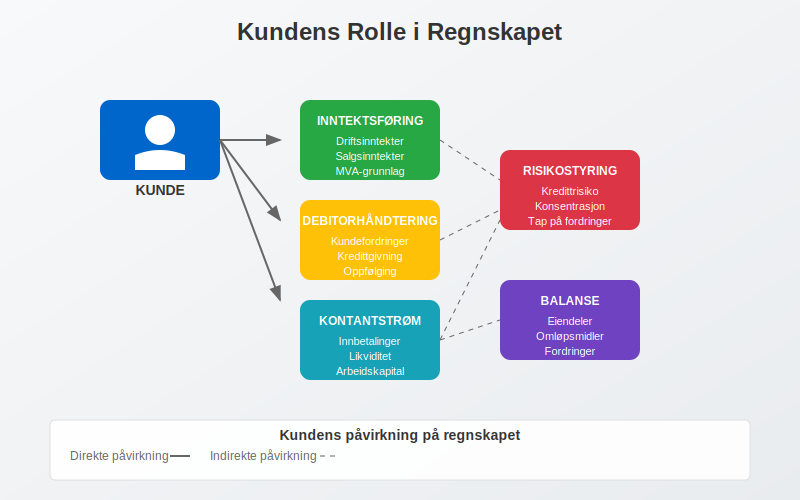
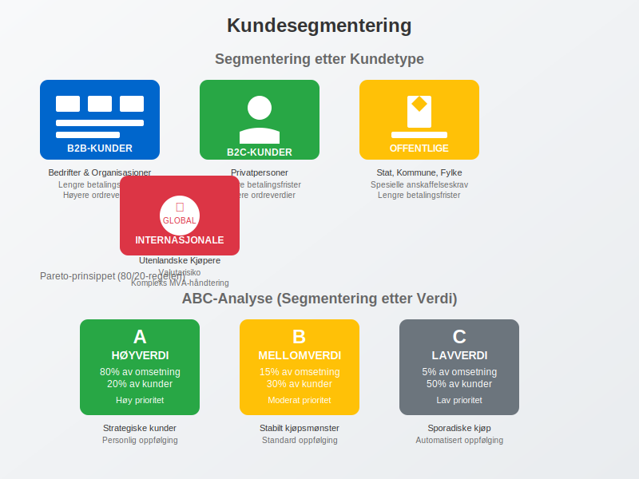
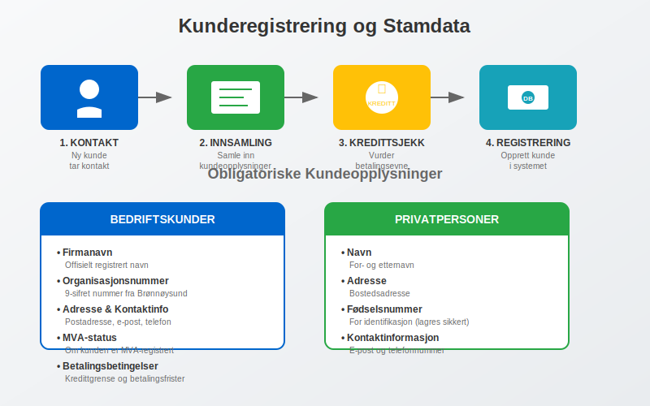
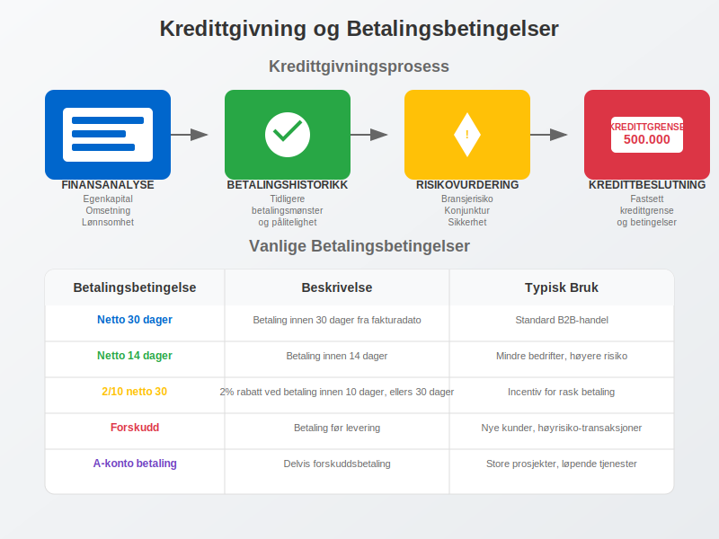
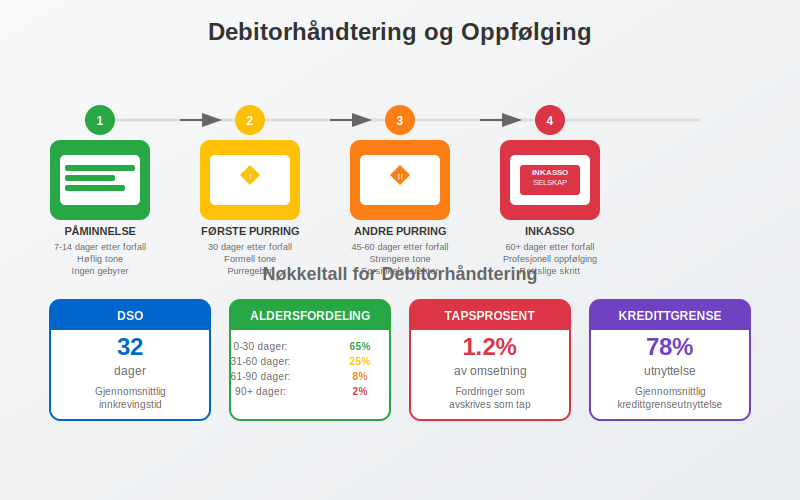
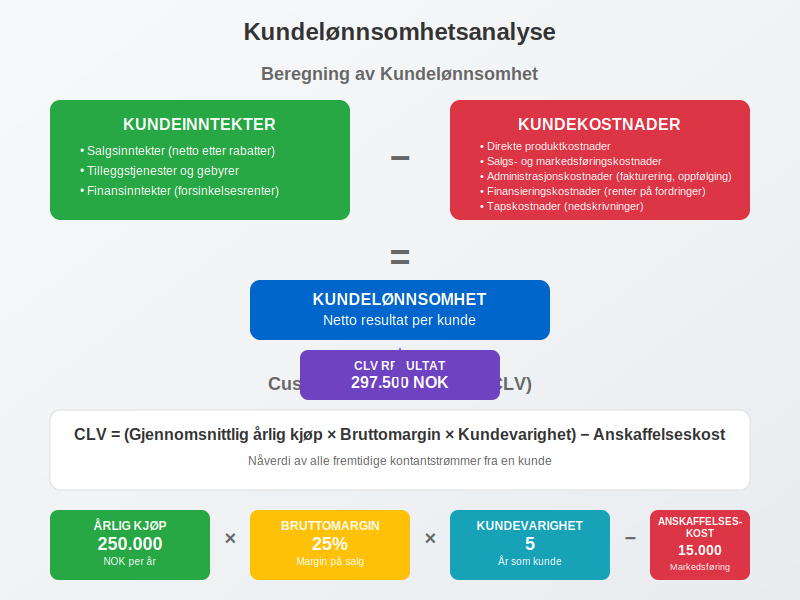
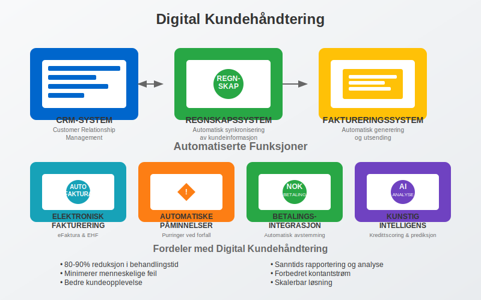

En kunde er en person eller organisasjon som kjøper varer eller tjenester fra en bedrift. I regnskapssammenheng representerer kunder den viktigste kilden til inntekter og er grunnlaget for bedriftens kontantstrøm. Effektiv kundehåndtering er avgjørende for bedriftens lønnsomhet og påvirker direkte arbeidskapitalen gjennom systematisk oppfølging av debitor-porteføljen.
Seksjon 1: Kundens Rolle i Regnskapet
I regnskapssammenheng er kunder mer enn bare kjøpere - de representerer fremtidige kontantstrømmer og er en kritisk del av bedriftens eiendeler gjennom kundefordringer. Når en bedrift selger på kreditt, oppstår det en debitor som må følges opp systematisk for å sikre betaling.

Kundens Påvirkning på Regnskapet
Kunder påvirker regnskapet på flere måter:
- Inntektsføring: Salg til kunder genererer driftsinntekter
- Debitorhåndtering: Kredittgivning skaper kundefordringer som må administreres
- Kontantstrøm: Kundebetalinger er hovedkilden til operasjonell kontantstrøm
- Risikostyring: Kundekonsentrasjon og kredittrisiko påvirker bedriftens finansielle stabilitet
Seksjon 2: Kundetyper og Segmentering
Bedrifter kategoriserer ofte kunder basert på ulike kriterier for å optimalisere salgs- og regnskapsstrategier. Denne segmenteringen påvirker hvordan kunder håndteres i regnskapssystemet og hvilke betalingsbetingelser som tilbys.

2.1 Segmentering etter Kundetype
| Kundetype | Karakteristikk | Regnskapsmessige Hensyn |
|---|---|---|
| B2B-kunder (Hva er B2B?) | Bedrifter og organisasjoner | Lengre betalingsfrister, høyere ordreverdier, kompleks fakturering |
| B2C-kunder (Hva er B2C?) | Privatpersoner | Kortere betalingsfrister, lavere ordreverdier, enklere fakturaer |
| Offentlige kunder | Stat, kommune, fylke | Spesielle anskaffelseskrav, lengre betalingsfrister |
| Internasjonale kunder | Utenlandske kjøpere | Valutarisiko, kompleks MVA-håndtering, eksportdokumentasjon |
2.2 Segmentering etter Verdi
- A-kunder: Høyverdi-kunder som genererer 80% av omsetningen
- B-kunder: Mellomverdi-kunder med stabilt kjøpsmønster
- C-kunder: Lavverdi-kunder med sporadiske kjøp
Denne ABC-analysen hjelper bedrifter med å prioritere ressurser og tilpasse kredittbetingelser basert på kundens strategiske betydning.
Seksjon 3: Kunderegistrering og Stamdata
Korrekt kunderegistrering er fundamentet for effektiv kundehåndtering og nøyaktig regnskapsføring. Kundestamdata må være komplette og oppdaterte for å sikre smidig fakturabehandling og betalingsoppfølging. Et velorganisert kundekartotek er essensielt for å administrere all kunderelatert informasjon systematisk og effektivt.

Obligatoriske Kundeopplysninger
For norske bedriftskunder kreves følgende informasjon:
- Firmanavn: Offisielt registrert navn
- Organisasjonsnummer: 9-sifret nummer fra Brønnøysundregistrene
- Adresse: Komplett postadresse for fakturering
- Kontaktinformasjon: E-post og telefonnummer
- MVA-status: Om kunden er MVA-registrert
- Betalingsbetingelser: Kredittgrense og betalingsfrister
For privatpersoner registreres:
- Navn: For- og etternavn
- Adresse: Bostedsadresse
- Fødselsnummer: For identifikasjon (lagres sikkert)
- Kontaktinformasjon: E-post og telefon
Kredittsjekk og Risikovurdering
Før kreditt innvilges, bør bedrifter utføre kredittsjekk for å vurdere kundens betalingsevne:
- Kredittrapporter: Fra Bisnode, Experian eller lignende
- Årsregnskap: Analyse av kundens finansielle stilling
- Betalingshistorikk: Tidligere betalingsmønster
- Referanser: Fra andre leverandører
Seksjon 4: Kredittgivning og Betalingsbetingelser
Når bedrifter selger på kreditt, oppstår det et kredittforhold mellom selger og kunde. Dette forholdet må styres aktivt for å minimere risiko og optimalisere kontantstrøm. Fakturasalg krever systematisk oppfølging og risikostyring.

Fastsettelse av Kredittgrenser
Kredittgrenser fastsettes basert på:
- Kundens finansielle styrke: Egenkapital, omsetning, lønnsomhet
- Betalingshistorikk: Tidligere betalingsmønster og pålitelighet
- Bransjerisiko: Konjunkturutsikter og bransjespecifikke risikoer
- Sikkerhet: Garantier, pant eller andre sikkerheter
Vanlige Betalingsbetingelser
| Betalingsbetingelse | Beskrivelse | Typisk Bruk |
|---|---|---|
| Netto 30 dager | Betaling innen 30 dager fra fakturadato | Standard B2B-handel |
| Netto 14 dager | Betaling innen 14 dager | Mindre bedrifter, høyere risiko |
| 2/10 netto 30 | 2% rabatt ved betaling innen 10 dager, ellers 30 dager | Incentiv for rask betaling |
| Forskudd | Betaling før levering | Nye kunder, høyrisiko-transaksjoner |
| A-konto betaling | Delvis forskuddsbetaling | Store prosjekter, løpende tjenester |
Seksjon 5: Debitorhåndtering og Oppfølging
Systematisk debitorhåndtering er kritisk for å sikre at kundefordringer konverteres til kontanter innen rimelig tid. Dette påvirker direkte bedriftens arbeidskapital og lønnsomhet.

Oppfølgingsprosess for Forfalte Fordringer
Når fakturaer ikke betales til forfallstid, må bedriften iverksette systematisk oppfølging:
-
Betalingspåminnelse (7-14 dager etter forfall):
- Høflig påminnelse om forfalt faktura
- Ingen tilleggsgebyrer på første påminnelse
- Oppfordring til kontakt ved betalingsproblemer
-
Første purring (30 dager etter forfall):
- Mer formell tone med krav om umiddelbar betaling
- Purregebyr kan pålegges
- Trussel om videre oppfølging
-
Andre purring (45-60 dager etter forfall):
- Strengere formulering med høyere purregebyr
- Forsinkelsesrenter påløper
- Varsel om inkassobehandling
-
Inkassobehandling (60+ dager etter forfall):
- Overføring til profesjonelt inkassoselskap
- Høyere kostnader for kunden
- Mulig rettslig forfølgelse
Nøkkeltall for Debitorhåndtering
Bedrifter bør overvåke følgende nøkkeltall for å vurdere effektiviteten av debitorhåndteringen:
- Gjennomsnittlig innkrevingstid (DSO): Antall dager fra salg til betaling
- Aldersfordeling av fordringer: Prosentandel fordringer i ulike aldersgrupper
- Tapsprosent: Andel fordringer som må avskrives som tap
- Kredittgrenseutnyttelse: Hvor mye av kredittgrensen som er benyttet
Seksjon 6: Kundeanalyse og Lønnsomhet
For å optimalisere kundeporteføljen må bedrifter analysere kundelønnsomhet og identifisere de mest verdifulle kundene. Dette påvirker ressursallokering og strategiske beslutninger.

Beregning av Kundelønnsomhet
Kundelønnsomhet beregnes ved å sammenligne kundeinntekter med kundekostnader:
Kundeinntekter:
- Salgsinntekter (netto etter rabatter)
- Tilleggstjenester og gebyrer
- Finansinntekter (renter på forsinket betaling)
Kundekostnader:
- Direkte produktkostnader
- Salgs- og markedsføringskostnader
- Administrasjonskostnader (fakturering, oppfølging)
- Finansieringskostnader (renter på utestående fordringer)
- Tapskostnader (nedskrivninger og avskrivninger)
Customer Lifetime Value (CLV)
Customer Lifetime Value er nåverdien av alle fremtidige kontantstrømmer fra en kunde:
CLV = (Gjennomsnittlig årlig kjøp × Bruttomargin × Kundevarighet) - Anskaffelseskost
Denne beregningen hjelper bedrifter med å:
- Prioritere kundegrupper
- Fastsette markedsføringsbudsjetter
- Vurdere investeringer i kundeservice
- Optimalisere prissetting
Seksjon 7: Digitalisering av Kundehåndtering
Moderne bedrifter digitaliserer stadig mer av kundehåndteringen for å øke effektiviteten og redusere kostnader. API-integrasjon og automatisering spiller en sentral rolle i denne utviklingen.

CRM-systemer og Regnskapsintegrasjon
Customer Relationship Management (CRM) systemer integreres med regnskapssystemer for å:
- Automatisk opprette kunder i regnskapet
- Synkronisere kundeinformasjon mellom systemer
- Generere fakturaer direkte fra CRM
- Spore betalinger og oppdatere kundestatus
Automatisert Fakturabehandling
Moderne løsninger automatiserer store deler av faktureringsprosessen:
- Elektronisk fakturering: Direkte overføring av fakturaer til kundens system
- eFaktura: Elektronisk levering til kundens nettbank
- Automatisk påminnelser: Systemgenererte purringer ved forfall
- Betalingsintegrasjon: Automatisk avstemming av innbetalinger
Kunstig Intelligens i Kundehåndtering
AI-teknologi brukes til:
- Kredittscoring: Automatisk vurdering av kunders kredittrisiko
- Betalingsprediksjon: Forutsi hvilke kunder som vil betale for sent
- Kundesegmentering: Automatisk kategorisering basert på kjøpsmønster
- Chatbots: Automatisert kundeservice for enkle henvendelser
Seksjon 8: Juridiske Aspekter ved Kundehåndtering
Kundehåndtering er regulert av flere lover og forskrifter som bedrifter må forholde seg til. Brudd på disse kan få alvorlige konsekvenser.
Personvernlovgivning (GDPR)
Ved håndtering av personopplysninger må bedrifter:
- Innhente samtykke: Eksplisitt samtykke til behandling av persondata
- Informere om formål: Tydelig kommunikasjon om hvorfor data samles inn
- Sikre dataene: Implementere tekniske og organisatoriske sikkerhetstiltak
- Respektere rettigheter: Gi kunder tilgang til, retting og sletting av data
Inkassoloven
Ved oppfølging av forfalte fordringer gjelder inkassoloven som regulerer:
- Purregebyrer: Maksimale satser for påminnelser
- Inkassosalær: Godkjente satser for inkassobehandling
- Fremgangsmåte: Krav til varsling og dokumentasjon
- Forbrukervern: Særlige regler for privatpersoner
Regnskapsloven og Bokføringsloven
Kundehåndtering må følge kravene i regnskapsloven og bokføringsloven:
- Dokumentasjon: Alle kundetransaksjoner må dokumenteres
- Oppbevaring: Kundedokumenter må oppbevares i minimum 5 år
- Sporbarhet: Mulighet til å spore alle transaksjoner
- Internkontroll: Systemer for å sikre korrekt behandling
Seksjon 9: Beste Praksis for Kundehåndtering
Effektiv kundehåndtering krever systematisk tilnærming og kontinuerlig forbedring. Her er anbefalte beste praksis:
Kundeservice og Kommunikasjon
- Proaktiv kommunikasjon: Informer kunder om endringer og viktige frister
- Fleksible betalingsløsninger: Tilby AvtaleGiro og andre automatiske løsninger
- Rask respons: Svar på kundehenvendelser innen 24 timer
- Personlig oppfølging: Dedikerte kontaktpersoner for store kunder
Risikostyring
- Diversifisering: Unngå for stor avhengighet av enkeltkunder
- Kredittforsikring: Vurder forsikring mot kundetap
- Regelmessig gjennomgang: Oppdater kredittgrenser basert på endringer
- Tidlig varsling: Identifiser betalingsproblemer tidlig
Kontinuerlig Forbedring
- Måling av nøkkeltall: Følg opp DSO, tapsprosent og kundetilfredshet
- Kundefeedback: Innhent tilbakemeldinger på faktureringsprosessen
- Prosessoptimalisering: Automatiser rutineoppgaver
- Kompetanseutvikling: Opplær ansatte i kundehåndtering
Konklusjon
Kunder er bedriftens viktigste ressurs og krever systematisk håndtering for å sikre optimal lønnsomhet og kontantstrøm. Effektiv kundehåndtering kombinerer korrekt registrering, aktiv debitoroppfølging, risikostyring og digitale løsninger for å skape varige kundeforhold og finansiell stabilitet.
Ved å implementere beste praksis for kundehåndtering kan bedrifter redusere kredittrisiko, forbedre kontantstrøm og bygge sterkere kundeforhold som bidrar til langsiktig vekst og lønnsomhet.